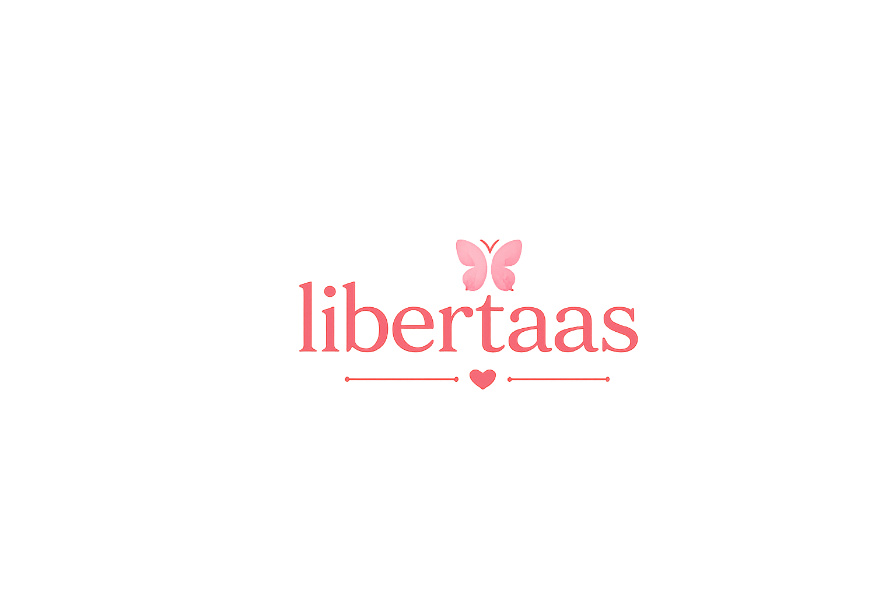

Assista ao vídeo abaixo e descubra por que tantas mulheres vivem para os outros e acabam se perdendo de si mesmas.
▶ ASSISTIR AGORADurante muito tempo eu pensei que amar significava me esquecer. Vivi em função dos outros. Coloquei meus filhos, minha família e as necessidades de todos acima das minhas. Até perceber que uma mulher que esquece de si mesma acaba vivendo apenas para sobreviver. Se essa história faz sentido para você, talvez este seja o momento de iniciar sua transformação.
QUERO COMEÇAR MINHA TRANSFORMAÇÃOEntenda a origem da dependência emocional.
Aprenda a voltar a se escolher sem culpa.
Construa relações mais leves e saudáveis.
Márcia Ribeiro é Administradora, Terapeuta Familiar e de Casal, Pesquisadora de Inteligência Emocional e Neurociência desde 2014, Cristã, mãe, casada, Executiva de Multinacionais e Empresária.
Há mais de uma década dedica sua vida ao desenvolvimento humano, ministrando palestras em todo o Brasil e ajudando mulheres a fortalecerem sua autoestima, desenvolverem inteligência emocional e reconstruírem suas vidas.
Sua própria história de transformação inspirou a criação do Instituto Libertaas, fundado em 2025 com a missão de desenvolver mulheres para a autocura, o autoconhecimento e a autoperformance.
Hoje acompanha mães e mulheres dentro e fora do Brasil, conduzindo jornadas de transformação emocional para que possam viver relacionamentos mais saudáveis e uma vida com mais propósito.
Missão:
✨ Mulheres curadas.
✨ Filhos sarados.
✨ Gerações transformadas.
Eu também vivi anos acreditando que precisava cuidar de todos para merecer amor. Depois de enfrentar minha própria jornada de transformação, descobri que o verdadeiro amor começa quando aprendemos a nos escolher. Hoje ajudo outras mulheres a romperem a dependência emocional e reconstruírem sua identidade.